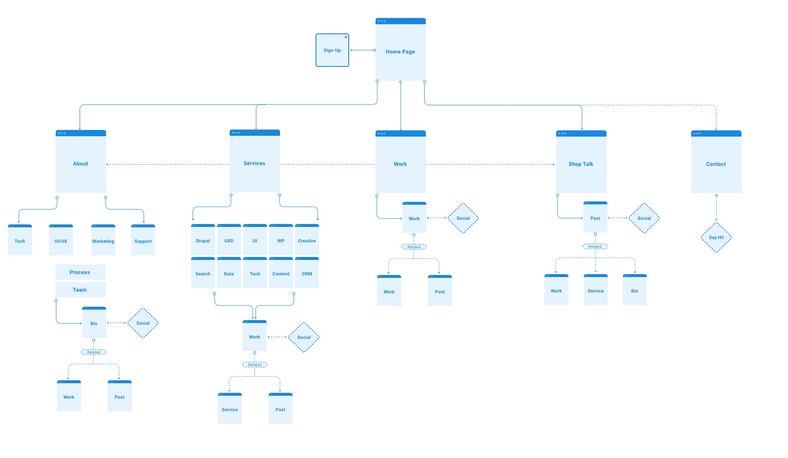
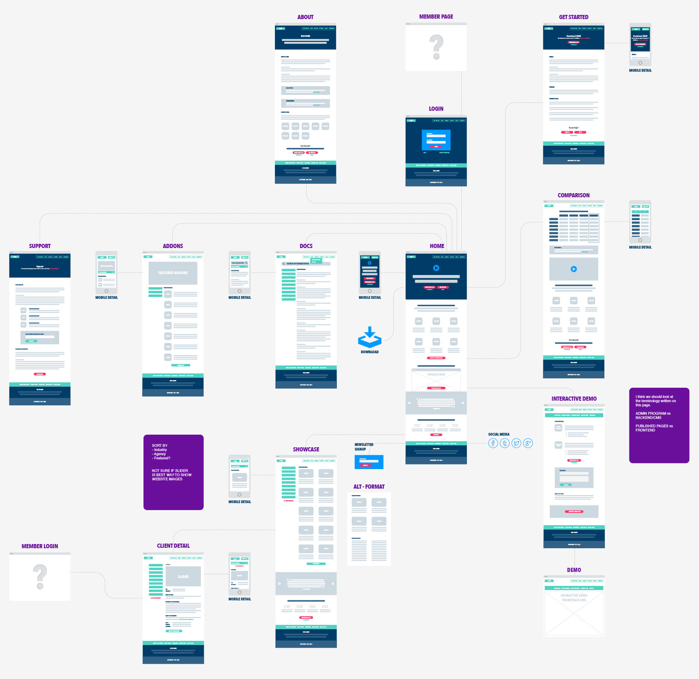
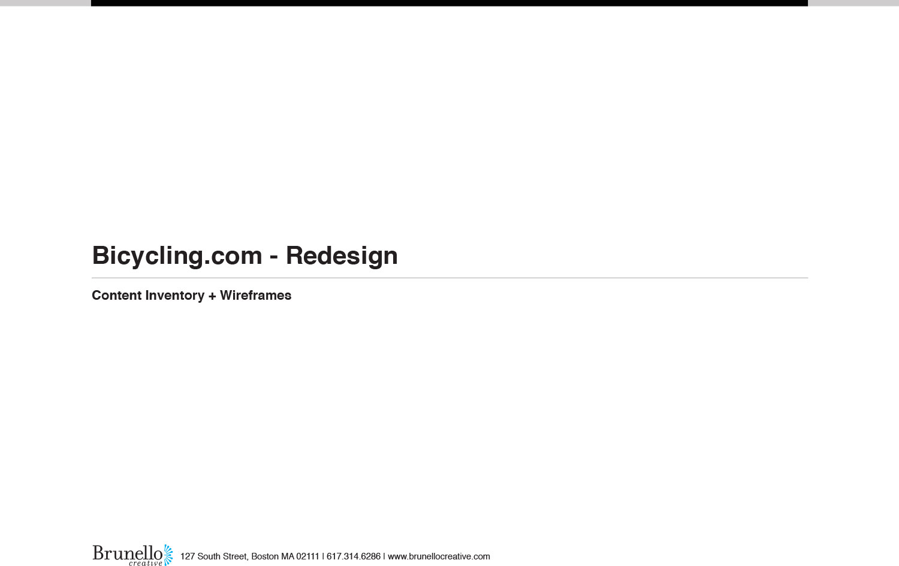

Style Direction #2

Style Direction #2



I created this Content Inventory — to show at a block
level the heirarchy of information for the page. We created a
list of all possible blocks and used that to scaffold out all
the page types. Types were assigned to blocks of similar
functionality to display placements.


I created this Content Inventory — to show at a block
level the heirarchy of information for the page. We created a
list of all possible blocks and used that to scaffold out all
the page types. Types were assigned to blocks of similar
functionality to display placements.

Near Final Sitemap.

Final Sitemap